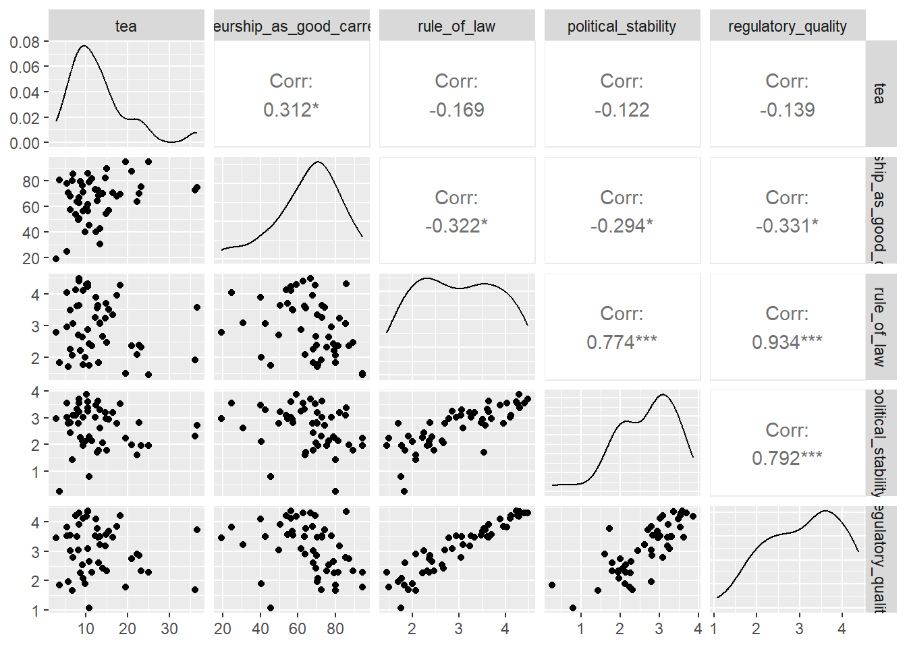

# operacoes basicas
5 + 5[1] 1010 - 6[1] 410*2[1] 205/2[1] 2.55**2[1] 25sqrt(16)[1] 4Este código possui algumas seções. A primeira delas será um nivelamento. Em sequência, teremos uma seção sobre a análise exploratória de dados usando o pacote dplyr e ggplot2. A última seção será para conduzir algumas análises de comparação de grupos.
Como qualquer linguagem de programação, o R executa instruções que são passadas. Vamos introduzir, vendo operações básicas.
# operacoes basicas
5 + 5[1] 1010 - 6[1] 410*2[1] 205/2[1] 2.55**2[1] 25sqrt(16)[1] 4Utilize parênteses para ordenar a lógica de prioridade de operações.
5*(50-45)[1] 25É comum atribuirmos valores às variáveis. Para isso, usamos o símbolo <- ou =. A atribuição é útil, pois deixa o código mais limpo e fácil de prestar manutenção.
#Atribuições
x <- 5 + 5
y <- 10 - 16
a <- 9
soma <- a + x
nome <- "daniel"
certo <- TRUEUma vez realizada a atribuição, os valores aparecem no painel do canto superior direito do RStudio (em Environment).

Você pode resgatar valores atribuídos para realizar cálculos com os valores guardados.
# como vimos no codigo acima x = 10 e a = 9
x + a[1] 19Vamos aplicar o que acabamos de aprender para criar uma calculadora de IMC.
peso_daniel <- 90
altura_daniel <- 1.78
imc_daniel <- peso_daniel/(altura_daniel)**2
imc_daniel[1] 28.4055É possível fazer o IMC de vários grupos ao mesmo tempo? Sim, para isso, vamos trabalhar com vetores. O vetor é um conjunto unidimensional de objetos de um mesmo tipo.
Traduzindo… imagina uma tabela de excel formada por várias colunas. Uma das colunas é a idade e está expressa em número. Pronto, um vetor é como se fosse uma coluna com valores de um mesmo tipo.
# trabalhando com vetores
pesos <- c(65, 95, 75, 77, 80, 68)
alturas <- c(1.60, 1.78, 1.80, 1.68, 1.72, 1.65)
imcs <- pesos/alturas**2
imcs[1] 25.39062 29.98359 23.14815 27.28175 27.04164 24.97704Vamos arrendondar usando duas casas decimais?
imcs <- round(imcs, 2)
imcs[1] 25.39 29.98 23.15 27.28 27.04 24.98As matrizes possuem uma estrutura tabular, com linhas e colunas. Porém, semelhante ao vetor, todos os objetos devem ser de um mesmo tipo (ex.: tudo número, tudo caracter).
Matriz<-cbind(pesos,alturas,imcs)
Matriz pesos alturas imcs
[1,] 65 1.60 25.39
[2,] 95 1.78 29.98
[3,] 75 1.80 23.15
[4,] 77 1.68 27.28
[5,] 80 1.72 27.04
[6,] 68 1.65 24.98O dataframe é um estrutura tabular semelhante à matriz. O maior diferencial dela é que você consegue armazenar valores de diferentes tipos (ex.: numérico, characteres, etc).
df <- as.data.frame(Matriz)
df pesos alturas imcs
1 65 1.60 25.39
2 95 1.78 29.98
3 75 1.80 23.15
4 77 1.68 27.28
5 80 1.72 27.04
6 68 1.65 24.98Quem está iniciando o uso de R frequentemente sofre um pouco com a leitura dos dados. Isso é um ponto muito crítico, pois o novo usuário pode se frustrar logo quando está dando os primeiros passos.
Aqui vou tentar explicar como é possível fazer a leitura dos dados sem muitos problemas. Isso abre uma das potencialidades do R: ler dados de múltiplos formatos.
1) O primeiro passo é localizar onde o seu arquivo está. Sugiro, fortemente, que deixe o arquivo em alguma pasta de trabalho com todos os arquivos que você vai usar.
Uma boa forma de você localizar onde está o arquivo é usando os três pontinhos conforme print abaixo.
2) Uma nova janela será aberta. Basta você navegar para achar a pasta onde seu arquivo está localizado. Eu guardei nesta pasta chamada 02_dados.
3) O próximo passo consiste em selecionar a opção “Import Dataset…” conforme o print abaixo.
4) Será aberta uma tela assistente que mostra uma prévia de como os resultados vão aparecer.
Dica de boa prática: copie o código gerado (marcado em vermelho acima), pois na próxima vez que rodar o script não precisa executar todo este passo a passo, basta executar o comando.
GEM_APS <- readxl::read_excel("~/GitHub/r_unicamp/02_dados/GEM_APS.xlsx",
col_types = c("numeric", "text", "numeric",
"numeric", "numeric", "numeric",
"numeric", "numeric", "numeric",
"numeric", "numeric", "numeric",
"numeric", "numeric", "numeric",
"numeric", "numeric", "numeric"))Nesta seção vamos começar aplicar um conjunto de funções para conseguir adentrar no tratamento e análise exploratória de dados. Antes de começar, assegure que o tidyverse esteja instalado e também carregue o pacote.
Vou carregar outros pacotes que vão ser úteis ao longo das análises.
# instalando o pacote
# install.packages("tidyverse")
# carregando pacote
library(tidyverse)
library(readxl)
library(readr)
library(skimr)
library(ggrepel)
library(GGally)
library(car)glimpseGlimpse em inglês significa “vislumbre”, “olhada rápida”, “olhadinha”. Esta função ajuda a você conferir rapidamente alguns detalhes sobre o dataframe.
Pelos resultados, é possível ver o número de linhas (1128), colunas (18), os tipos de variáveis e as primeiras observações.
glimpse(GEM_APS)Rows: 1,128
Columns: 18
$ code <dbl> 1, 27, 30, 31, 33, 34, 36, 3…
$ economy <chr> "United States", "South Afri…
$ year <dbl> 2023, 2023, 2023, 2023, 2023…
$ perceived_opportunities <dbl> 53.81, 64.10, 45.29, 67.37, …
$ perceived_capabilities <dbl> 48.99, 69.21, 53.76, 46.01, …
$ fear_failure_rate <dbl> 44.55, 59.51, 53.16, 40.29, …
$ entrepreneurial_intentions <dbl> 12.09, 7.45, 9.10, 16.02, 13…
$ tea <dbl> 14.71, 11.11, 6.74, 13.69, 1…
$ established_business_ownership <dbl> 6.74, 5.92, 14.70, 6.92, 4.5…
$ entrepreneurial_employee_activity <dbl> NA, NA, NA, NA, NA, NA, NA, …
$ motivational_index <dbl> NA, NA, NA, NA, NA, NA, NA, …
$ female_male_TEA <dbl> 0.84, 0.76, 0.79, 0.80, 0.72…
$ female_male_opportunity_TEA <dbl> NA, NA, NA, NA, NA, NA, NA, …
$ high_job_creation_expectation <dbl> 28.80, 21.42, 12.12, 15.13, …
$ innovation <dbl> NA, NA, NA, NA, NA, NA, NA, …
$ business_services_sector <dbl> 20.42, 3.57, 22.53, 23.65, 3…
$ high_status_successful_entrepreneurs <dbl> 78.94, 85.51, 69.76, NA, 51.…
$ entrepreneurship_as_good_carrer_of_choice <dbl> 79.21, 78.46, 72.90, NA, 65.…selectEsta função permite você selecionar apenas as variáveis (colunas) que são do seu interesse no dataframe.
No código abaixo, vamos selecionar apenas as variáveis com o nome do país, o ano e a variável Total early-stage entrepreneurial activity (TEA). Em sequência, vamos guardar o resultado da seleção em um novo objeto.
# selecionando apenas as variveis pais, ano, tea
GEM_APS_select <-
GEM_APS |>
select(economy, year, tea)
# a funcao head() imprime apenas as seis primeiras observacoes
GEM_APS_select |>
head()# A tibble: 6 × 3
economy year tea
<chr> <dbl> <dbl>
1 United States 2023 14.7
2 South Africa 2023 11.1
3 Greece 2023 6.74
4 Netherlands 2023 13.7
5 France 2023 10.8
6 Spain 2023 6.79|> se chama pipe. Ele é um elemento muito comum na estrutura do tidyverse. O que ele significa? Ele é artifício para encadear funções no R. Com o passar do seu uso ficará mais claro. O atalho para o pipe é Ctrl + Shift + M.filterEsta função serve para filtrar apenas observações (linhas) de acordo com um critério.
Vamos supor que eu queira pegar apenas as observações do Brasil.
GEM_APS |>
filter(economy == 'Brazil')# A tibble: 23 × 18
code economy year perceived_opportunities perceived_capabilities
<dbl> <chr> <dbl> <dbl> <dbl>
1 55 Brazil 2023 65.4 65.9
2 55 Brazil 2022 67.9 69.2
3 55 Brazil 2021 54.8 66.7
4 55 Brazil 2020 57.3 67.8
5 55 Brazil 2019 46.4 62.0
6 55 Brazil 2018 31.4 54.3
7 55 Brazil 2017 46.4 55.9
8 55 Brazil 2016 40.2 53.6
9 55 Brazil 2015 42.4 58.3
10 55 Brazil 2014 55.5 50.0
# ℹ 13 more rows
# ℹ 13 more variables: fear_failure_rate <dbl>,
# entrepreneurial_intentions <dbl>, tea <dbl>,
# established_business_ownership <dbl>,
# entrepreneurial_employee_activity <dbl>, motivational_index <dbl>,
# female_male_TEA <dbl>, female_male_opportunity_TEA <dbl>,
# high_job_creation_expectation <dbl>, innovation <dbl>, …Vamos supor que eu queira pegar observações do Brasil ou Argentina. Para isso, vamos usar o conector ou (simbolizado por |). Vou aproveitar e colocar para ordenar pela coluna ano (year) usando a função arrange.
GEM_APS |>
filter(economy == 'Brazil' |
economy == 'Argentina') |>
arrange(year)# A tibble: 41 × 18
code economy year perceived_opportunities perceived_capabilities
<dbl> <chr> <dbl> <dbl> <dbl>
1 54 Argentina 2001 19.8 54.8
2 55 Brazil 2001 40.6 54.3
3 54 Argentina 2002 20.7 66.8
4 55 Brazil 2002 41.4 55.0
5 54 Argentina 2003 65.1 62.8
6 55 Brazil 2003 41.4 50.8
7 54 Argentina 2004 56.6 58.6
8 55 Brazil 2004 43.8 55.7
9 54 Argentina 2005 57.5 55.1
10 55 Brazil 2005 42.7 50.2
# ℹ 31 more rows
# ℹ 13 more variables: fear_failure_rate <dbl>,
# entrepreneurial_intentions <dbl>, tea <dbl>,
# established_business_ownership <dbl>,
# entrepreneurial_employee_activity <dbl>, motivational_index <dbl>,
# female_male_TEA <dbl>, female_male_opportunity_TEA <dbl>,
# high_job_creation_expectation <dbl>, innovation <dbl>, …Vamos supor que eu queira agora pegar os dados de Brasil e Argentina, mas eu queira pegar apenas observações 2010 adiante. Agora vamos ter que usar também o conector and’, simbolizado por &.
GEM_APS |>
filter((economy == 'Brazil' |
economy == 'Argentina') & year >= 2010)# A tibble: 23 × 18
code economy year perceived_opportunities perceived_capabilities
<dbl> <chr> <dbl> <dbl> <dbl>
1 55 Brazil 2023 65.4 65.9
2 55 Brazil 2022 67.9 69.2
3 55 Brazil 2021 54.8 66.7
4 55 Brazil 2020 57.3 67.8
5 55 Brazil 2019 46.4 62.0
6 54 Argentina 2018 35.9 48.8
7 55 Brazil 2018 31.4 54.3
8 54 Argentina 2017 29.6 43.1
9 55 Brazil 2017 46.4 55.9
10 54 Argentina 2016 44.3 61.2
# ℹ 13 more rows
# ℹ 13 more variables: fear_failure_rate <dbl>,
# entrepreneurial_intentions <dbl>, tea <dbl>,
# established_business_ownership <dbl>,
# entrepreneurial_employee_activity <dbl>, motivational_index <dbl>,
# female_male_TEA <dbl>, female_male_opportunity_TEA <dbl>,
# high_job_creation_expectation <dbl>, innovation <dbl>, …mutateA função mutate é útil para a criação de variáveis. Vamos fazer um exercício com a variável female_male_TEA, multiplicando-a por 100 para deixar na lógica percentual.
Mas se notar, esta variável está como char (qualitativo), mas tem que estar como numérico. Veja a seguir.
# funcao class serve para verificar o tipo da variavel
class(GEM_APS$female_male_TEA)[1] "numeric"Como converter?
GEM_APS$female_male_TEA <- as.double(GEM_APS$female_male_TEA)
class(GEM_APS$female_male_TEA)[1] "numeric"Agora é possível usar a função mutate.
GEM_APS |>
mutate(perc_fem_male_TEA = female_male_TEA * 100) |>
select(year, economy, perc_fem_male_TEA) # A tibble: 1,128 × 3
year economy perc_fem_male_TEA
<dbl> <chr> <dbl>
1 2023 United States 84
2 2023 South Africa 76
3 2023 Greece 79
4 2023 Netherlands 80
5 2023 France 72
6 2023 Spain 81
7 2023 Hungary 56
8 2023 Italy 61
9 2023 Romania 71
10 2023 Switzerland 90
# ℹ 1,118 more rowsgroup_by e summariseAs funções group_by e summarise são geralmente aplicadas em conjunto. A primeira realiza algum agrupamento e a segunda realiza uma sumarização dos dados.
Para exemplificar, vamos pegar dados de 2023 para países da América do Sul e América do Norte. Já vimos como fazer isso usando a função filter.
# estes sao os paises
americas <- c("Brazil","Chile","Uruguay","Colombia","Canada",
"Ecuador","Mexico","United States","Venezuela")
# primeiro vamos filtrar o ano de 2023 e depois filtramos aqueles paises que estao no vetor chamado americas
GEM23_americas <-
GEM_APS |>
filter(year == 2023) |>
filter(economy %in% americas)
GEM23_americas# A tibble: 9 × 18
code economy year perceived_opportunities perceived_capabilities
<dbl> <chr> <dbl> <dbl> <dbl>
1 1 United States 2023 53.8 49.0
2 52 Mexico 2023 61.5 69.2
3 55 Brazil 2023 65.4 65.9
4 56 Chile 2023 59.4 75.7
5 57 Colombia 2023 60.0 72.2
6 58 Venezuela 2023 65.8 84.1
7 101 Canada 2023 62.6 56.7
8 593 Ecuador 2023 54.3 75.2
9 598 Uruguay 2023 58.3 69.8
# ℹ 13 more variables: fear_failure_rate <dbl>,
# entrepreneurial_intentions <dbl>, tea <dbl>,
# established_business_ownership <dbl>,
# entrepreneurial_employee_activity <dbl>, motivational_index <dbl>,
# female_male_TEA <dbl>, female_male_opportunity_TEA <dbl>,
# high_job_creation_expectation <dbl>, innovation <dbl>,
# business_services_sector <dbl>, …O próximo passo é fazer um tratamento para criar uma variável nova que será usada para identificar se é país da América do Norte ou Sul. Para isso, vamos usar a função mutate.
# usando um if_else verificamos se o nome do pais e Mexico OU Canada OU United States. Caso verdadeiro, atribui-se o valor de 'Norte', caso contrario, atribui-se o valor de Sul a variável hemisferio, que devera vir depois (.after) da variavel economy
GEM23_americas <-
GEM23_americas |>
mutate(hemisferio = if_else(economy == 'Mexico'|
economy == 'Canada'|
economy == 'United States',
'Norte',
'Sul'), .after = economy)
GEM23_americas# A tibble: 9 × 19
code economy hemisferio year perceived_opportunit…¹ perceived_capabilities
<dbl> <chr> <chr> <dbl> <dbl> <dbl>
1 1 United S… Norte 2023 53.8 49.0
2 52 Mexico Norte 2023 61.5 69.2
3 55 Brazil Sul 2023 65.4 65.9
4 56 Chile Sul 2023 59.4 75.7
5 57 Colombia Sul 2023 60.0 72.2
6 58 Venezuela Sul 2023 65.8 84.1
7 101 Canada Norte 2023 62.6 56.7
8 593 Ecuador Sul 2023 54.3 75.2
9 598 Uruguay Sul 2023 58.3 69.8
# ℹ abbreviated name: ¹perceived_opportunities
# ℹ 13 more variables: fear_failure_rate <dbl>,
# entrepreneurial_intentions <dbl>, tea <dbl>,
# established_business_ownership <dbl>,
# entrepreneurial_employee_activity <dbl>, motivational_index <dbl>,
# female_male_TEA <dbl>, female_male_opportunity_TEA <dbl>,
# high_job_creation_expectation <dbl>, innovation <dbl>, …Agora sim vamos aplicar o group_by e summarise. Vamos agrupar pelo hemisfério e verificar a media da variavel female_male_TEA.
GEM23_americas |>
group_by(hemisferio) |>
summarise(media_fmt = mean(female_male_TEA))# A tibble: 2 × 2
hemisferio media_fmt
<chr> <dbl>
1 Norte 0.793
2 Sul 0.933Nota-se, portanto, que há um maior equilíbrio que empreendedoras e empreendedores no hemisfério sul da américa.
Existem múltiplos join (ex.: inner_join, left_join, right_join, full_join) e a principal função deles é unir dois conjunto de dados.
Vamos ver um exemplo que preparei neste artigo.
Vamos ler dois conjuntos de dados que preparei. Separei um recorte da base GEM APS para 2019 e uma base da Worldwide Governance Indicators (WGI).
#|warning: FALSE
# Lendo o GEM APS primeiro
gem_aps19 <- read_delim("~/GitHub/r_unicamp/02_dados/gem_2019_aps.csv",
delim = ";",
show_col_types = FALSE)
# Lendo a WGI
wgi <- read_delim("~/GitHub/r_unicamp/02_dados/wgi.csv",
delim = ",",
show_col_types = FALSE) |>
select(-`...1`)New names:
• `` -> `...1`Vamos olhar as estruturas das duas bases.
glimpse(gem_aps19)Rows: 50
Columns: 17
$ cod_pais <dbl> 374, 61, 375, 55, 101, 56, 86, …
$ economy <chr> "Armenia", "Australia", "Belaru…
$ continent <chr> "Asia", "Oceania", "Europa", "A…
$ abrev <chr> "ARM", "AUS", "BLR", "BRA", "CA…
$ year <dbl> 2019, 2019, 2019, 2019, 2019, 2…
$ perceived_opportunities <dbl> 53.9, 45.7, 29.5, 46.4, 67.1, 4…
$ perceived_capabitilities <dbl> 70.0, 56.0, 42.3, 62.0, 56.8, 7…
$ fear_failure <dbl> 48.2, 47.4, 38.0, 35.6, 47.2, 5…
$ entrepreneurial_intentions <dbl> 32.2, 13.0, 6.6, 30.2, 11.9, 57…
$ tea <dbl> 21.0, 10.5, 5.8, 23.3, 18.2, 36…
$ established_ownership <dbl> 7.84, 6.53, 2.72, 16.16, 7.44, …
$ entrepreneurial_employee_Activity <dbl> 0.6, 8.3, 0.5, 0.6, 5.4, 3.6, 0…
$ female_male_tea <dbl> 0.6, 0.7, 0.8, 1.0, 0.7, 0.8, 0…
$ high_job_creation_expectation <dbl> 30.5, 24.6, 28.2, 8.9, 21.2, 36…
$ business_service_sector <dbl> 7.6, 26.3, 10.2, 7.6, 12.2, 19.…
$ high_status_successful_entrepreneurs <dbl> 73.4, 74.0, 69.9, 72.3, 79.9, 7…
$ entrepreneurship_as_good_carrer_choice <dbl> 87.2, 56.4, 70.3, 75.3, 69.2, 7…glimpse(wgi)Rows: 202
Columns: 8
$ country <chr> "Yemen, Rep.", "Syrian Arab Republic", "Afghanist…
$ code <chr> "YEM", "SYR", "AFG", "LBY", "IRQ", "SSD", "SOM", …
$ corruption <dbl> 0.8185391, 0.8114473, 1.0989244, 0.8963634, 1.163…
$ rule_of_law <dbl> 0.7266536, 0.4239366, 0.7864730, 0.6519459, 0.777…
$ regulatory_quality <dbl> 0.8360702, 0.7420965, 1.3794446, 0.1530526, 1.320…
$ gov_effectiveness <dbl> 0.22057843, 0.78872073, 1.03612506, 0.57785666, 1…
$ political_stability <dbl> -0.26829433, -0.22799635, -0.14940667, -0.0657525…
$ voice_accountability <dbl> 0.7339933, 0.5201248, 1.5119677, 1.0416653, 1.554…Note que as duas bases possuem variáveis equivalentes. Na base wgi a gente tem a variável code já a base gem_aps19 tem a variável abrev.
A partir disso, é possível fazer um join.
gem_wgi <-
gem_aps19 |>
left_join(wgi, by = c("abrev"="code"))
gem_wgi# A tibble: 50 × 24
cod_pais economy continent abrev year perceived_opportunities
<dbl> <chr> <chr> <chr> <dbl> <dbl>
1 374 Armenia Asia ARM 2019 53.9
2 61 Australia Oceania AUS 2019 45.7
3 375 Belarus Europa BLR 2019 29.5
4 55 Brazil America BRA 2019 46.4
5 101 Canada America CAN 2019 67.1
6 56 Chile America CHL 2019 47.6
7 86 China Asia CHN 2019 74.9
8 57 Colombia America COL 2019 46.7
9 385 Croatia Europa HRV 2019 55.7
10 357 Cyprus Europa CYP 2019 38.5
# ℹ 40 more rows
# ℹ 18 more variables: perceived_capabitilities <dbl>, fear_failure <dbl>,
# entrepreneurial_intentions <dbl>, tea <dbl>, established_ownership <dbl>,
# entrepreneurial_employee_Activity <dbl>, female_male_tea <dbl>,
# high_job_creation_expectation <dbl>, business_service_sector <dbl>,
# high_status_successful_entrepreneurs <dbl>,
# entrepreneurship_as_good_carrer_choice <dbl>, country <chr>, …O domínio de joins é algo que abre um mar de possibilidades, pois você pode conjugar bases de diferentes domínio. Inclusive, esta é a forma que mais acontece com o GEM, a exemplo dos seguintes estudos.
Audretsch, D. B., Belitski, M., Chowdhury, F., & Desai, S. (2022). Necessity or opportunity? Government size, tax policy, corruption, and implications for entrepreneurship. Small Business Economics, 58(4), 2025-2042.
Amorós, J. E., Leporati, M., & Torres-Marín, A. J. (2023). Senior entrepreneurship dynamics: Latin America perspective. International Journal of Entrepreneurial Behavior & Research.
Abdinnour, S., & Adeniji, S. O. (2023). Empirical analysis of the impact of entrepreneurial activity on economic growth of Global Entrepreneurship Monitor (GEM) countries. Journal of Global Entrepreneurship Research, 13(1), 12.
skimrA função skim é do pacote skimr. A função skim é
#|warning: FALSE
gem_wgi |>
select(economy,
continent,
entrepreneurship_as_good_carrer_choice,
tea,
rule_of_law,
regulatory_quality,
political_stability,
voice_accountability) |>
skim()| Name | select(…) |
| Number of rows | 50 |
| Number of columns | 8 |
| _______________________ | |
| Column type frequency: | |
| character | 2 |
| numeric | 6 |
| ________________________ | |
| Group variables | None |
Variable type: character
| skim_variable | n_missing | complete_rate | min | max | empty | n_unique | whitespace |
|---|---|---|---|---|---|---|---|
| economy | 0 | 1 | 4 | 20 | 0 | 50 | 0 |
| continent | 0 | 1 | 4 | 7 | 0 | 5 | 0 |
Variable type: numeric
| skim_variable | n_missing | complete_rate | mean | sd | p0 | p25 | p50 | p75 | p100 | hist |
|---|---|---|---|---|---|---|---|---|---|---|
| entrepreneurship_as_good_carrer_choice | 0 | 1 | 65.66 | 16.91 | 19.00 | 56.50 | 68.65 | 77.35 | 94.50 | ▁▂▆▇▅ |
| tea | 0 | 1 | 12.82 | 7.14 | 2.80 | 8.33 | 10.75 | 14.97 | 36.70 | ▇▇▃▁▁ |
| rule_of_law | 0 | 1 | 2.98 | 0.89 | 1.45 | 2.27 | 3.00 | 3.64 | 4.48 | ▆▇▇▆▇ |
| regulatory_quality | 0 | 1 | 3.10 | 0.86 | 1.08 | 2.36 | 3.21 | 3.77 | 4.37 | ▂▆▆▇▇ |
| political_stability | 0 | 1 | 2.65 | 0.77 | 0.25 | 2.12 | 2.80 | 3.22 | 3.86 | ▁▁▇▇▇ |
| voice_accountability | 0 | 1 | 2.79 | 1.01 | 0.88 | 1.95 | 3.15 | 3.52 | 4.19 | ▅▂▃▇▆ |
O R base contém várias funções de visualização, a exemplo desta abaixo.
# cria um histograma usando o R base
hist(gem_aps19$entrepreneurship_as_good_carrer_choice)
No entanto, existe um pacote chamado ggplot2 que contém uma grande vantagem dele em relação ao R base e outros pacotes estatísticos: a ampla capacidade de customização de gráficos. Vamos usar o mesmo exemplo acima, mas explorando algumas possibilidades de customização.
gem_aps19 |>
ggplot(aes(x = entrepreneurship_as_good_carrer_choice)) +
geom_histogram()`stat_bin()` using `bins = 30`. Pick better value with `binwidth`.Vamos customizar os nomes do eixos e acrescentar um título.
gem_aps19 |>
ggplot(aes(y = entrepreneurship_as_good_carrer_choice)) +
geom_boxplot() +
ylab("Empreendedorismo como opção de carreira") +
ggtitle("Histograma - Empreendedorismo como opção de carreira","Fonte: GEM (2019)")Vamos acrescentar dois elementos interessantes. Primeiro, vamos desagregar estes boxplot por continentes usando o parâmetro fill e também vamos colocar um fundo branco no gráfico. Também vamos retirar os valores do eixo x e colocar um título ao eixo x.
gem_aps19 |>
rename(Continente = continent) |>
ggplot(aes(y = entrepreneurship_as_good_carrer_choice,
fill = Continente)) +
geom_boxplot() +
ylab("Empreendedorismo como opção de carreira") +
ggtitle("Histograma - Empreendedorismo como opção de carreira",
"Fonte: GEM (2019)") +
xlab("Continente") +
theme_minimal() +
theme(axis.text.x = element_blank())Certo, e como salvar isso?
# atribuir o grafico a um objeto chamado grafico1
grafico1 <-
gem_aps19 |>
rename(Continente = continent) |>
ggplot(aes(y = entrepreneurship_as_good_carrer_choice,
fill = Continente)) +
geom_boxplot() +
ylab("Empreendedorismo como opção de carreira") +
ggtitle("Histograma - Empreendedorismo como opção de carreira",
"Fonte: GEM (2019)") +
xlab("Continente") +
theme_minimal() +
theme(
axis.text.x = element_blank(),
panel.background = element_rect(fill = "white",
color = NA),
axis.title.x = element_text(size = 14),
axis.title.y = element_text(size = 14),
axis.text.y = element_text(size = 12),
legend.title = element_text(size = 14),
legend.text = element_text(size = 14)
)
ggsave(filename = "grafico1.jpeg",
plot = grafico1,
height = 6,
width = 7,
dpi = 450)O ChatGPT é um ótimo aliado para visualização de dados. Pergunte para ele como aumentar as fontes dos eixos x e y.
grafico1 <-
gem_aps19 |>
rename(Continente = continent) |>
ggplot(aes(y = entrepreneurship_as_good_carrer_choice,
fill = Continente)) +
geom_boxplot() +
ylab("Empreendedorismo como opção de carreira") +
ggtitle("Histograma - Empreendedorismo como opção de carreira",
"Fonte: GEM (2019)") +
xlab("Continente") +
theme_minimal() +
theme(axis.text.x = element_blank(),
panel.background = element_rect(fill = "white",
color = NA))Agora eu quero criar um gráfico de linhas para verificar a evolução de determinado indicador.
Vamos acessar dados do GEM NES, que é a base do GEM que levanta informações contextual de cada país a partir de especialistas.
# lendo os dados do GEM NES
GEM_NES <- read_excel("~/GitHub/r_unicamp/02_dados/GEM_NES.xlsx",
col_types = c("numeric", "text", "numeric",
"numeric", "numeric", "numeric",
"numeric", "numeric", "numeric",
"numeric", "numeric", "numeric",
"numeric", "numeric", "numeric"))Vamos filtrar as observações do Brasil e Chile.
br_chile <- GEM_NES |>
filter(economy == "Brazil" |
economy == "Chile")Vamos agora plotar os gráficos para evolução da variável governamental_support_policies. Vamos usar o argumento color colocando o nome da variável país para plotar linhas que distinguem as nações. Como o Chile começa a ter um monitoramento contínuo apenas a partir de 2005, vou filtrar as observações.
br_chile |>
filter(year > 2005) |>
ggplot(aes(x = year,
y = governamental_support_policies,
color = economy)) +
geom_line()Agora é só melhorar um pouco o gráfico. Vamos colocar títulos aos eixos, bem como aumentar um pouco a espessura da reta.
br_chile |>
filter(year > 2005) |>
ggplot(aes(x = year,
y = governamental_support_policies,
color = economy)) +
geom_line(size = 1.5) +
scale_x_continuous(breaks = seq(2006, 2023, by = 1)) +
theme_minimal() +
xlab("Ano") +
ylab("Políticas públicas de suporte ao empreendedorismo") +
ggtitle("Evolução do suporte governamental por meio de políticas públicas - Brasil e Chile","Fonte: GEM-NES") +
theme(axis.text.x = element_text(angle = 90,
hjust = 1)) Warning: Using `size` aesthetic for lines was deprecated in ggplot2 3.4.0.
ℹ Please use `linewidth` instead.Vamos trabalhar com uma forma alternativa de visualização da mesma informação?
br_chile |>
filter(year > 2005) |>
ggplot(aes(x = year,
y = governamental_support_policies,
fill = economy)) +
geom_col(position = position_dodge(width = 0.9)) +
scale_x_continuous(breaks = seq(2006, 2023, by = 1)) +
geom_text(aes(label = governamental_support_policies),
position = position_dodge(width = 0.9),
angle = 90,
vjust = 0.3,
hjust = -0.3,
size = 3) +
theme_minimal() +
xlab("Ano") +
ylab("Políticas públicas de suporte ao empreendedorismo") +
coord_cartesian(ylim = c(0, 5.73 * 1.1)) +
theme(axis.text.x = element_text(angle = 90,
vjust = -2.5)) A página a seguir contém exemplos da aplicação do ggplot2: https://r-graph-gallery.com/ggplot2-package.html
O gráfico de dispersão é usado para associar duas variáveis. No código abaixo trazemos um exemplo e ainda incluímos alguns extras para deixar o gráfico mais interessante.
Usando o geom_point() conseguimos plotar o pontos.
Usando o geom_smooth(method = 'lm') conseguimos plotar uma linha que mostra a tendência de associação. O se é usado para tirar os intervalos de confiança ao redor da reta.
Usando o geom_text_repel() conseguimos adicionar textos aos pontos para sinalizar os países;
gem_wgi |>
ggplot(aes(x = political_stability,
y = entrepreneurship_as_good_carrer_choice)) +
geom_point(size = 1.5, aes(col = continent)) +
geom_smooth(method = 'lm', se = FALSE) +
geom_text_repel(aes(label = economy)) +
theme_minimal() +
xlab("Estabilidade política") +
ylab("Empreendedorismo como opção de carreira")`geom_smooth()` using formula = 'y ~ x'Warning: ggrepel: 2 unlabeled data points (too many overlaps). Consider
increasing max.overlapsVamos fazer só mais uma última adição: usar a função facet_wrap() para desagregar as visualizações por continente.
gem_wgi |>
ggplot(aes(x = political_stability,
y = entrepreneurship_as_good_carrer_choice)) +
geom_point(size = 1.5, aes(col = continent)) +
geom_smooth(method = 'lm', se = FALSE) +
geom_text_repel(aes(label = economy)) +
facet_wrap(~continent) +
theme_minimal() +
xlab("Estabilidade política") +
ylab("Empreendedorismo como opção de carreira")`geom_smooth()` using formula = 'y ~ x'Warning: ggrepel: 11 unlabeled data points (too many overlaps). Consider
increasing max.overlapsWarning: ggrepel: 3 unlabeled data points (too many overlaps). Consider
increasing max.overlapsA função ggpairs() do pacote GGally cria um diagrama de correlação de modo automatizado.
Vamos selecionar apenas algumas variáveis para aplicar.
gem_wgi |>
select(tea, entrepreneurship_as_good_carrer_choice,
rule_of_law, political_stability,
regulatory_quality) |>
ggpairs(progress = FALSE)
ANOVA é um teste inferencial paramétrico para comparação de médias. A hipótese do teste é avaliar se média populacional de duas ou mais categorias são iguais.
Vamos aplicar o teste para comparar o TEA por continent.
modelo <- aov(formula = tea ~ continent, data = gem_wgi)
summary(modelo) Df Sum Sq Mean Sq F value Pr(>F)
continent 4 1309 327.2 12.4 7.06e-07 ***
Residuals 45 1188 26.4
---
Signif. codes: 0 '***' 0.001 '**' 0.01 '*' 0.05 '.' 0.1 ' ' 1De acordo com os resultados, a média do TEA possui diferença significativa na população a p < 0,05.
Todavia, por ser um teste paramétrico, a ANOVA possui alguns pressupostos que devem ser atendidos.
O primeiro teste é da homogeneidade da variância. Vamos usar o teste de Levene para avaliar.
leveneTest(tea ~ continent, data = gem_wgi)Warning in leveneTest.default(y = y, group = group, ...): group coerced to
factor.Levene's Test for Homogeneity of Variance (center = median)
Df F value Pr(>F)
group 4 2.3271 0.07065 .
45
---
Signif. codes: 0 '***' 0.001 '**' 0.01 '*' 0.05 '.' 0.1 ' ' 1Se o p-valor for menor que 0,05 significa que temos evidência para rejeitar a hipótese das variâncias. Neste caso, como p > 0,05 assumimos que temos homogeneidade da variância. Logo, este pressuposto foi atendido.
Para testar a normalidade dos resíduos vamos usar o teste de Shapiro-Wilk. Neste teste, se p < 0,05, rejeitamos a hipótese nula. Logo, a distribuição dos resíduos difere de uma distribuição normal.
No nosso caso p>0,05, logo, a distribuição não difere de uma distribuição normal. Logo, o pressuposto da normalidade é atendido.
shapiro.test(resid(modelo))
Shapiro-Wilk normality test
data: resid(modelo)
W = 0.96334, p-value = 0.1227Visualizando o histograma dos resíduos conseguimos perceber que de fato é uma distribuição que se assemelha a uma curva normal, né?
hist(resid(modelo))Vamos agora ver o quão diferente são cada par a par de grupos. A última coluna p_adj é o teste para comparação. Observa-se que aqueles cujo p < 0,05 possuem diferenças significativas (America-Africa; Asia-America; Europa-America)
TukeyHSD(modelo) Tukey multiple comparisons of means
95% family-wise confidence level
Fit: aov(formula = tea ~ continent, data = gem_wgi)
$continent
diff lwr upr p adj
America-Africa 10.7300000 2.093904 19.366096 0.0082029
Asia-Africa -0.7066667 -8.921233 7.507899 0.9991804
Europa-Africa -2.9450000 -10.940471 5.050471 0.8322351
Oceania-Africa -1.6000000 -17.920688 14.720688 0.9986301
Asia-America -11.4366667 -17.396139 -5.477194 0.0000193
Europa-America -13.6750000 -19.328652 -8.021348 0.0000002
Oceania-America -12.3300000 -27.640162 2.980162 0.1675865
Europa-Asia -2.2383333 -7.224386 2.747719 0.7072368
Oceania-Asia -0.8933333 -15.969739 14.183072 0.9998126
Oceania-Europa 1.3450000 -13.613157 16.303157 0.9990244